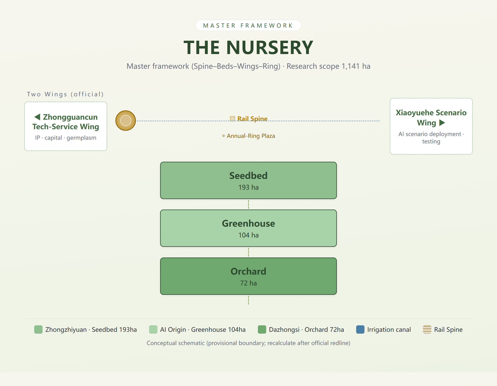

Spine–Beds–Wings–Ring master framework (static schematic) ｜ Browsers with WebGL auto-switch to the interactive 3D scene ｜ Conceptual proposal, non-official boundary; recalculate after the official redline
Master map · Three-tier scope · Key areas · Land use · Transport & slow travel · Blue-green & public space · Buildings · Renewal projects · AI scenarios · Core metrics · Task coverage · Self-check status · Sources · Assumptions